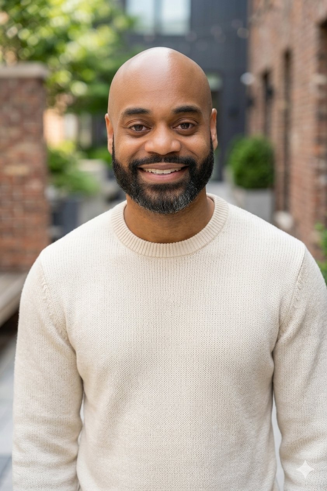

Overview
Mark A. Ward is a founding partner of Ward & Rafter, LLP. With over 15 years of experience, Mark has earned a reputation as a seasoned litigator and trial advocate throughout Staten Island and New York. His extensive courtroom experience, coupled with his background in legal services, brings a unique perspective and relentless determination to every case.
Mark's approach to representation is collaborative and client-centered. He believes strongly that the attorney-client relationship is one of partnership, where the client is the ultimate decision-maker and the attorney's role is to provide skilled advocacy, strategic counsel, and clear communication at every stage.
Court Experience
Mark has successfully practiced in a wide range of courts throughout New York, including:
State Courts:
• Richmond County Housing Court
• Richmond County Civil Court
• Richmond County Supreme Court
• New York City Civil Court
• New York City Family Court
• New York State Supreme Court Appellate Term
• New York State Supreme Court Appellate Division, Second Department
Federal Courts:
• United States District Court, Eastern District of New York
• United States District Court, Southern District of New York
Administrative Agencies:
• Division of Housing and Community Renewal (DHCR)
• Department of Housing Preservation and Development (HPD)
• New York City Housing Authority
Achievements & Recognition
Throughout his career as a litigator, Mark has achieved several notable successes, including multiple published decisions in the New York Law Journal. These published decisions demonstrate his commitment to advancing the law and his ability to handle matters of legal significance.
Mark's work has been recognized within the legal community, and he has served in leadership positions including Secretary of the New York City Bar Association's Housing Court Committee.
Real Estate Experience
In addition to his litigation practice, Mark has represented both buyers and sellers in hundreds of residential and commercial real estate transactions. This transactional experience complements his litigation work and allows him to provide comprehensive counsel to real estate clients.
Litigation Philosophy
Mark's approach to litigation is built on several core principles:
Collaboration: Mark views the attorney-client relationship as a partnership. He keeps clients informed at every stage and seeks their input on litigation strategy.
Preparation: Mark believes in preparing every matter as if for trial. This preparation strengthens his clients' bargaining position for settlement and ensures readiness if trial becomes necessary.
Communication: Clear, consistent communication is essential. Mark makes himself accessible to clients and ensures they understand all aspects of their case.
Strategic Thinking: Every case requires a tailored strategy. Mark works with clients to formulate holistic litigation strategies designed to achieve the best possible outcome, whether through negotiation or trial.
Legal Services Background
For the majority of his career, Mark worked in legal services representing clients who could not otherwise afford an attorney. This experience provided unique and invaluable training as a litigator, requiring him to handle a vast array of legal matters and develop skills across multiple practice areas.
His legal services background instilled in Mark a deep commitment to access to justice and client advocacy. It taught him to be resourceful, creative, and relentless in protecting his clients' interests—qualities that continue to define his practice today.

Education
North Carolina Central University School of Law
Juris Doctorate, 2005
North Carolina Agricultural and Technical State University
Bachelor of Arts, 2002
Graduated Magna Cum Laude
Bar Admissions
• New York State Supreme Court, 2nd Department (2006)
• United States District Court, Eastern District of New York (2009)
• United States District Court, Southern District of New York (2009)
Practice Areas
• Landlord-Tenant Law
• Real Estate Litigation
• Residential and Commercial Transactions
• Complex Civil Litigation
• Condominium & HOA Board Representation
• Foreclosure Defense
• Estate Planning
• Consumer Credit Transactions
• FDCPA Compliance
• Corporate Formation
• Family Law
Professional Memberships
• New York City Bar Association
• New York City Bar Association, Housing Court Committee (Secretary)
• Working Group on Racial Equality in New York Courts
• Housing Court Judicial Appointment Review Panel, New York City Bar Association
Personal
Mark was born and raised in Brooklyn, New York, where he developed an early appreciation for community, resilience, and the pursuit of justice. Growing up in one of New York City's most dynamic boroughs gave Mark a firsthand understanding of the challenges urban communities face, an understanding that continues to shape his approach to advocacy and client representation today.
Mark is married to his wife, Shayla, and has two sons, Mark Jr. and Kairon. Outside of his legal practice, Mark is an avid Brazilian Jiu Jitsu practitioner and serves as a youth basketball coach, investing in the next generation both on and off the mat. He is also an active member of his local church, where he volunteers his time and talents to serve others.
Mark believes that the values instilled in him growing up in Brooklyn, hard work, loyalty, and standing up for what is right, are the same values he brings to every client and every case.